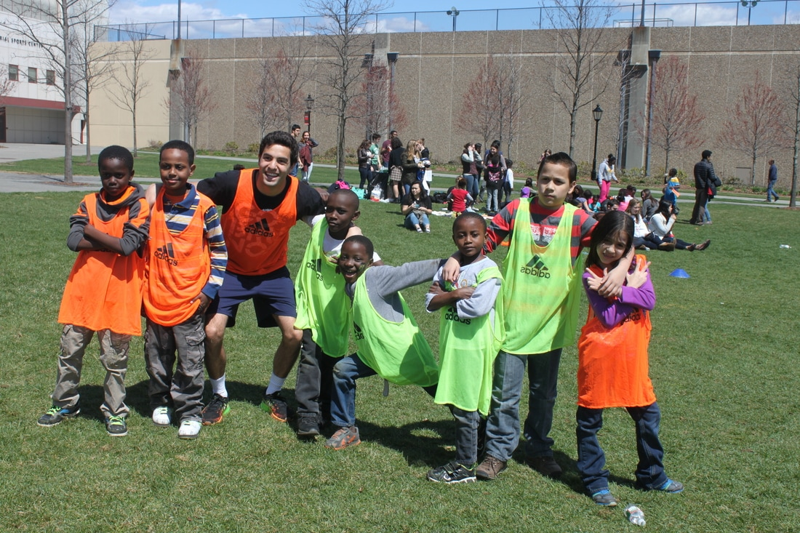

Join Us!
Available Positions
BRYTE Tutor
BRYTE is a highly selective student organization at Brown and we seek students who will be committed and passionate volunteers. The application process entails filling out a written application and undertaking an interview with one of the BRYTE coordinators. Tutor Expectations:
- Minimum 2 semester commitment
- 3 hours of in-home tutoring each week
- Weekly Progress Reports
- Coordinator Check-Ins
- Attendance of 2 trainings per semester
- Attendance of 1 community event per semester
BRYTE Initiative
BRYTE Initiative, implemented in Spring 2018 and formerly known as BRYTE Leaders, offers tutors a unique opportunity to become more involved in BRYTE outside of the traditional tutoring role. As a member of BRYTE Initiative, tutors can take on greater responsibility in different aspects of BRYTE that they find most engaging. Tutors within the Initiative will also gain a new perspective on BRYTE through their participation in the program.
Contact Us
Feedback? Ideas for how we can be better? Concerns? Questions? We welcome all! Email: brown.refugee.tutoring@gmail.com